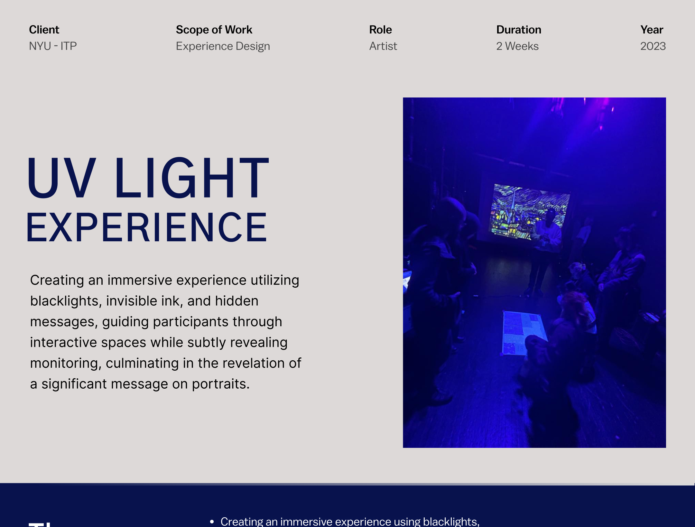
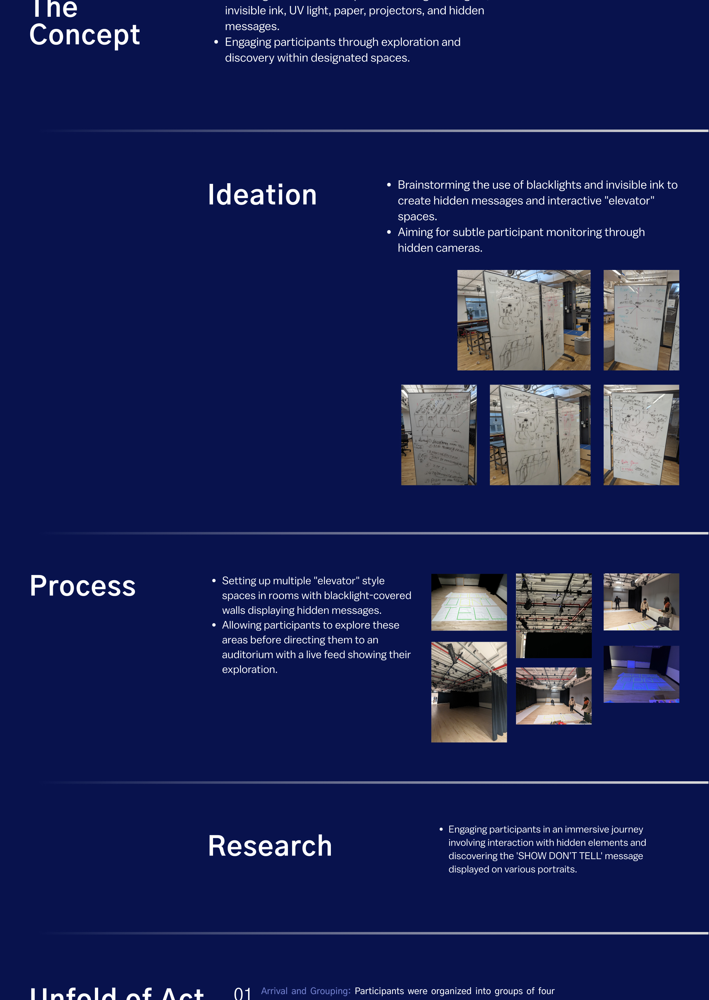
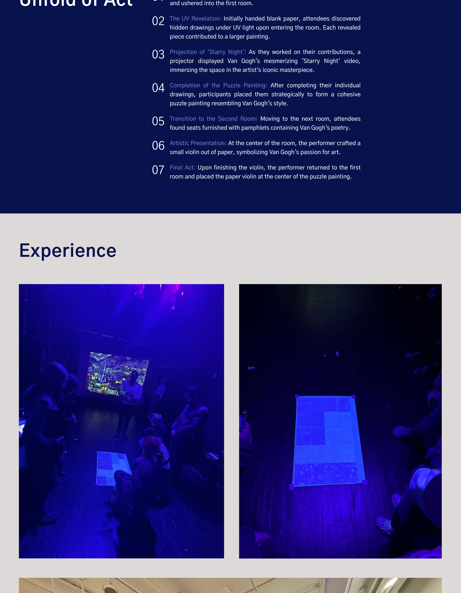
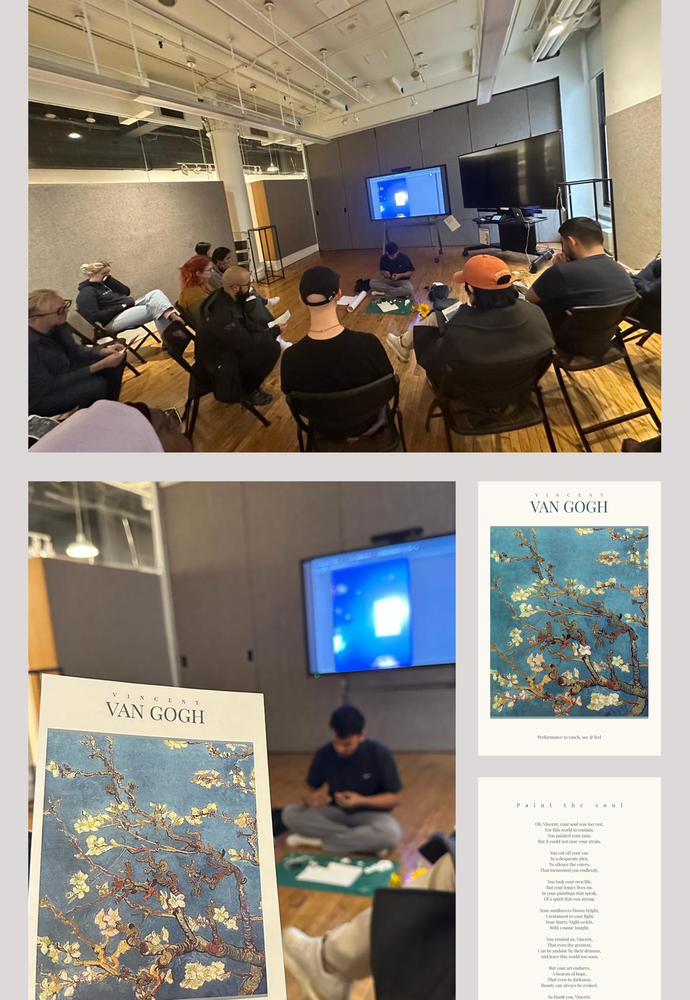

Background
The Concept
- Creating an immersive experience using blacklights, invisible ink, UV light, paper, projectors, and hidden messages.
- Engaging participants through exploration and discovery within designated spaces.
Exploration
Ideation
- Brainstorming the use of blacklights and invisible ink to create hidden messages and interactive “elevator” spaces.
- Aiming for subtle participant monitoring through hidden cameras.

Making
Process
- Setting up multiple “elevator” style spaces in rooms with blacklight-covered walls displaying hidden messages.
- Allowing participants to explore these areas before directing them to an auditorium with a live feed showing their exploration.
Discovery
Research
Engaging participants in an immersive journey involving interaction with hidden elements and discovering the ‘SHOW DON’T TELL’ message displayed on various portraits.
Narrative
Unfold of Act
- Arrival and Grouping — Participants were organized into groups of four and ushered into the first room.
- The UV Revelation — Initially handed blank paper, attendees discovered hidden drawings under UV light upon entering the room. Each revealed piece contributed to a larger painting.
- Projection of ‘Starry Night’ — As they worked on their contributions, a projector displayed Van Gogh’s mesmerizing ‘Starry Night’ video, immersing the space in the artist’s iconic masterpiece.
- Completion of the Puzzle Painting — After completing their individual drawings, participants placed them strategically to form a cohesive puzzle painting resembling Van Gogh’s style.
- Transition to the Second Room — Moving to the next room, attendees found seats furnished with pamphlets containing Van Gogh’s poetry.
- Artistic Presentation — At the center of the room, the performer crafted a small violin out of paper, symbolizing Van Gogh’s passion for art.
- Final Act — Upon finishing the violin, the performer returned to the first room and placed the paper violin at the center of the puzzle painting.
Documentation
Experience


Interaction
Hidden Messages & Portraits
Each participant received a portrait card with seemingly innocent questions — “How many cups of coffee have you had since the start of the program?”, “What do you enjoy most about your work?”, “How many hours of sleep do you get daily?”, “What do you enjoy about ITP?”, “Draw anything”, and “What are your weekend plans?”. Under UV light, the hidden messages and drawings were revealed on these seemingly blank surfaces.
Environment
The Blacklight Stage
The main stage was transformed into a UV-reactive environment with fluorescent tape markings on the floor, colorful UV dots, and hidden text that only became visible under blacklight. Participants explored the space, discovering hidden elements as they moved through zones of visible and invisible light.
Engagement
Participant Interaction
Participants engaged deeply with the installation, examining UV-revealed messages on their cards, viewing hidden drawings through blacklight, and filling out their personal portrait cards with handwritten answers. A live camera feed in the auditorium showed the exploration happening in real-time, adding a subtle layer of monitoring to the experience.
Team
Credits
Capabilities
Tools and Techniques
Contribution
My Role
My role encompasses conceptualizing and implementing the immersive experience, overseeing the setup of interactive spaces, monitoring systems, and orchestrating participant engagement to reveal the hidden message, ensuring a captivating and impactful journey for all involved.
Reflections
What I Learned
The UV Light Experience was my first project where the design medium was space itself, not a screen. The key insight was that participatory installations require a careful balance between structure and freedom. Too much direction and participants feel herded; too little and they miss the hidden elements entirely. The solution was environmental cues—UV-reactive tape on the floor subtly guided movement without explicit instructions.
The live camera feed added an unexpected layer. Participants in the auditorium watched others explore the UV rooms, creating a voyeuristic tension that reinforced the installation’s theme of hidden observation. This was not planned—it emerged from the setup. It taught me that the best design moments often come from responding to emergent behavior rather than scripting every interaction.